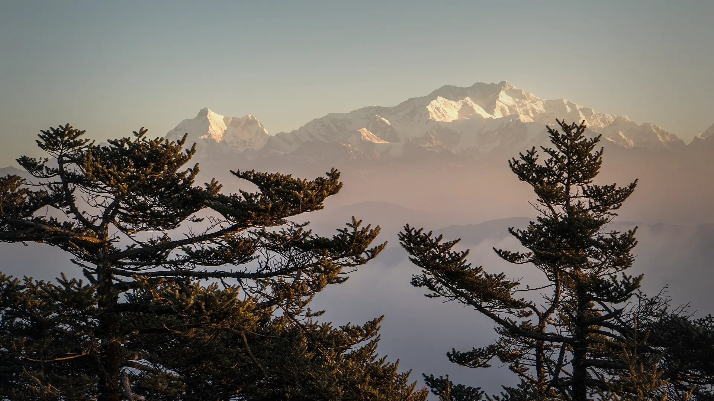

01Day 1 · Manebhanjankm 0.1
The foot of the ridge
~28kmFrom Darjeeling · By road
Manebhanjan is where the Singalila Ridge treks begin, about 28 km from Darjeeling.

Photo: Alexkom000, CC BY 4.0सन्दकफू · Darjeeling, Sikkim & Darjeeling
The trek in one line, and what you can do with it.
Sandakphu is a ridge walk on the India–Nepal border, staying in homestays, and one of the great mountain views of the Himalaya at its high point.
7 stops on the map, then the climb. Scroll the stops and the map follows.
01Day 1 · Manebhanjankm 0.1
~28kmFrom Darjeeling · By road
Manebhanjan is where the Singalila Ridge treks begin, about 28 km from Darjeeling.
02Day 2 · Tumling · 2,875 mkm 10.1
10kmToday · 7–8 h on the mapped trail
The trail climbs out of Manebhanjan to Chitrey, where the Nepal border begins, and on past Meghma to the ridge-top hamlet of Tumling.
03Day 3 · Kalapokhri · 2,990 mkm 22.8
13kmToday · About 8 h
A long day along the ridge, past the check post into Singalila National Park, to Kalapokhri, "the black lake".
05Day 5 · Sandakphu · 3,636 mkm 28.0
5kmFrom Kalapokhri · 2–3 h, the day before
Sandakphu (3,636 m) is the highest point of the Singalila Ridge and of West Bengal. Most groups arrive the afternoon before and wait for sunrise.
05Day 5 · Phalut · about 3,600 mkm 44.7
17kmToday · 7–8 h along the crest
A long, open walk north along the crest of the ridge to Phalut, at about 3,600 m, almost as high as Sandakphu.
06Day 6 · Gorkheykm 52.8
8kmToday · 4–5 h, steeply down
The trail drops steeply off the ridge through forest to Gorkhey, a village in the valley below.
07Day 7 · Sepikm 62.1
9kmToday · On the mapped trail
The last walk follows the valley down to Sepi, where the road begins again.
Best in Mar–May, Sep–Nov.
Dark: the months the trek’s sources call its best. Mid: possible. See all treks in March.
 Photo: Alexkom000, CC BY 4.0
Photo: Alexkom000, CC BY 4.0
Base prices from 7 operators’ own pages, per person. GST and travel are often extra. Treqz sells nothing.
₹9,000–33,999
The practical things, then the questions people ask.
One thing from each part of the packing list, so nothing big is missed. The full list, with where to rent and the daily rates, is on the 3D page.
The full packing list →


The last ATM on the way is at Mirik. Draw cash in NJP, Siliguri or Bagdogra.
Himalaya TrekkerBSNL has the best signal on the ridge. Jio and Airtel work at Manebhanjan but drop out above Tonglu.
Trek in SikkimYou can charge at every night stop except Phalut. Carry a power bank for that night.
Bikat AdventuresWater is available at Chitrey, Lamaydhura and Meghma. There is none between Sandakphu and Phalut, so carry the whole day's water.
Bikat AdventuresSmall shops come every 2–3 km. In Tumling they sell tea, Maggi and bottled water.
Discover with DheerajGuest houses and homestays, mostly dorms. Camps have dry-pit toilet tents. Carry your own toilet paper.
Bikat AdventuresAbout 62.1 km of walking over 7 days on the trail.
The highest point is 3,636 m, about 1,640 m above the start.
Its sources grade it Not graded.
Mar–May, Sep–Nov.
₹9,000 to ₹33,999 per person: base prices from 7 operators' own pages. GST and travel are often extra.
BSNL has the best signal on the ridge. Jio and Airtel work at Manebhanjan but drop out above Tonglu.
A shared jeep from NJP via Darjeeling costs ₹400–600 a seat and takes 5–6 h. A private taxi costs ₹3,500–5,000.
The last ATM on the way is at Mirik. Draw cash in NJP, Siliguri or Bagdogra.
Thermal top and bottom, Full-sleeve T-shirts, Full-sleeve sweater, Warm jacket, Rain jacket and pants, Quick-dry track pants ×2, Waterproof warm gloves, Woollen cap and sun hat. The full list is on the 3D page.
Its sources do not list December to February as a trekking season.
Dzongri, Goechala, Green Lake, David Scott Trail, Nongriat root bridges.


Treks in March · Treks in April · Treks in May · Treks in September · Treks in Sikkim and Darjeeling · 7 Day Treks in India · Treks in India Under ₹10,000 · Sandakphu vs Goechala · Sandakphu vs Dzongri · Sandakphu vs Green Lake · Free trek finder · All treks in 3D